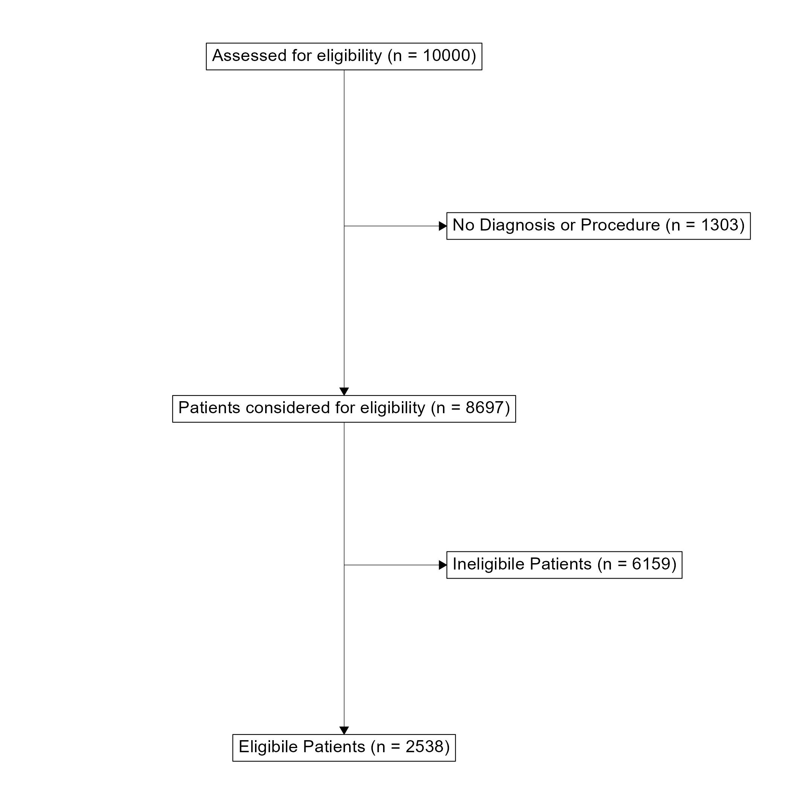
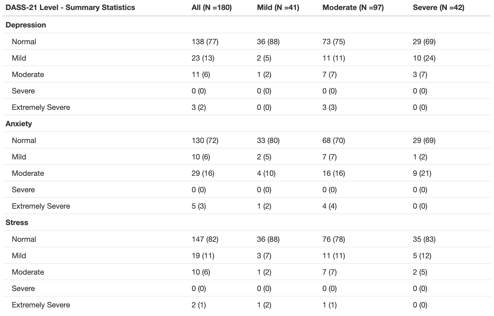

study_cohorts <- el.sample %>%
cohort_start("Assessed for eligibility") %>%
# Define cohorts using named expressions
cohort_define(
# Patient with missing diagnosis or procedure codes
missing = .full %>% filter(!has_dx & !has_proc),
# only patients with diagnosis or procedure considered
considered = .full %>% filter(has_dx | has_proc),
# patients without congential heart disease
ineligibile = .full %>% filter(!el_final & (has_dx | has_proc)),
# patients with congential Heart Disease
eligibile = .full %>% filter(el_final)) %>%
# Provide text table for cohorts
cohort_label(
missing = "No Diagnosis or Procedure",
considered = "Patients considered for eligibility",
ineligibile = "Ineligibile Patients",
eligibile = "Eligibile Patients")
study_consort <- study_cohorts %>%
# Add the boxes
consort_box_add(
"full", 0, 50, cohort_count_adorn(study_cohorts, .full)) %>%
consort_box_add(
"considered", 0, 30, cohort_count_adorn(study_cohorts, considered)) %>%
consort_box_add(
"eligibile", 0, 10, cohort_count_adorn(study_cohorts, eligibile)) %>%
consort_box_add(
"missing", 5, 40, cohort_count_adorn(study_cohorts, missing)) %>%
consort_box_add(
"ineligibile", 5, 20, cohort_count_adorn(study_cohorts, ineligibile)) %>%
# Add the arrows
consort_arrow_add(
start = "full", start_side = "bottom",
end = "considered", end_side = "top") %>%
consort_arrow_add(
start = "considered", start_side = "bottom",
end = "eligibile", end_side = "top") %>%
consort_arrow_add(
end = "missing", end_side = "left", start_x = 0, start_y = 40) %>%
consort_arrow_add(
end = "ineligibile", end_side = "left", start_x = 0, start_y = 20) %>%
# Plot with ggplot
ggplot() +
geom_consort() +
theme_consort(margin_h = 15, margin_v = 1)
study_consortApplying literate programming techniques in the workplace
Health Data Science
Literate Programming
Calum discusses the power of literate programming to communicate with clincal collaborators
Calum has been working with the Heart Research Institute since 2018 and he is the National Coordinator for an Australia-wide congenital heart disease (CHD) registry.
Calum completed the MSc Health Data Science in 2021. His dissertation used geographical information and analysis techniques to assist with service delivery planning for adults with Congenital Heart Disease an was published in PLOS Digital Health.
The need for literate programming
Working as data scientists, our analyses are useless if they cannot be communicated with our collaborators and audiences. Especially when working with topic area specialists such as clinicians, public health experts or clinical researchers, presenting the results of our data analysis is essential. Literate programming techniques are tools that allow for the combination of conventional word processing with code for data analysis. These tools have fast become one of the most useful tools that I was taught during my time completing the Master of Health Data Science with the Centre for Big Data Research in Health. Of course, you still need the key skills of a data scientist—data management, statistics, and visualisation—otherwise there would be nothing to include in a report! However, working with people who do not have the access to the analytic software that you might use means that we need to be able to take our analyses out of these systems so that other people can engage with our work.
Markdown is a common form of implementing a literature programming technique. It is a mark-up language that is used to format text documents. Unlike Microsoft Word, which is a WYSIWYG (/ˈwɪziwɪɡ/ WIZ-ee-wig, i.e. what you see is what you get!) editor, where changes are to text formatting are seen immediately, Markdown uses specific syntax to create formatted text. This does require learning some of the markdown language, but you can mostly get by with knowing a few basics such as headings, lists, and bold and italic text. There are many different tools that combine markdown language with code, Jupyter Notebook is a common one that works with many different coding languages. My experience is mostly with R Markdown from R Studio, which is an excellent tool for literate programming.
I work for the Heart Research Institute, coordinating a project that is developing a Bi-National Registry for Congenital Heart Disease in Australia and New Zealand. In this role we have moved through data collection, cleaning, and analysis phases. In all these areas, using literate programming tools to generate reports have become a key part of my workflows. I am often collaborating with clinical staff, often cardiologists, nurses, and neuropsychologists, to produce various outputs and these outputs are always a HTML report using R Markdown.
Data Collection Reports: did I receive that data that I think I did?
Data collection for our registry involves receiving extracts for clinical data sources, often with hundreds of thousands of records. It is important to make sure that the data that we receive is what was intended to be sent. To aid these processes, I have developed data collection reports using R Markdown. These simply overview everything that was received, with some simple exploratory data analysis. These reports often go back to data managers and clinicians and provide a very useful sanity check that can identify simple mistakes early in the process.

ggconsort A flow diagram for patient selection into the ACHD registry. Toggle to the code tab to see the underlying code.First a “Study Cohort” is generated. dplyr verbs can be used to filter the cohort that will appear in the flowchart. Second, the boxes and arrows are drawn and plotted with ggplot.
A flowchart is a very useful tool for communicating the data collection process and how an eligible population was determined. This has always been difficult to implement in R and has usually required some manual development in a Microsoft Office application. However, I have recently discovered the ggconsort package that is great for making Consort-Style flowchart. This package can create simple consort diagrams that are perfect for demonstrating how a target population was reached. It uses very familiar dplyr and ggplot2 workflows that make it quite easy to pick up for those who are already familiar with the tidyverse.
Data Analysis: collaborating with topic area specialists.
Recently, I have been working with neuropsychologists to analyse data in preparation for manuscripts. Unsurprisingly, I know very little about neuropsychology and the neuropsychologists have never used R before! Using literate programming as an iterative process to complete data analysis for a manuscript can really help bridge the gap between disciplines. Ideally, I would want to hand over my analyses with enough clarity that my collaborators can assess my methodologies from their expert perspectives and then write up their results and methods sections using only my reports. This requires not only providing the analysis but including some notes and comments about methodology used for cohort selection and statistical analysis. Since literate programming allows you to write prose alongside your code, it provides a great process for clearing writing out your methods right alongside the analysis and results. You can provide exactly what you think should be included in a manuscript to describe your analysis and your collaborators won’t have to try decipher your code to understand what you are doing.

The code below uses the summary_table() function from the qwraps package to create a nice summary table. The template is applied to the whole dataset, then stratified by disease complexity (using dyplr::group_by()). We can then add these two tables together with cbind() to create the final table.
options(qwraps_markup = "markdown")
# Create Table Template for DASS-21 Summary
dass_level_summary <-
list("Depression" =
list("Normal" = ~ n_perc0(dass_dep_level_clean == "Normal"),
"Mild" = ~ n_perc0(dass_dep_level_clean == "Mild"),
"Moderate" = ~ n_perc0(dass_dep_level_clean == "Moderate"),
"Severe" = ~ n_perc0(dass_dep_level_clean == "Severe"),
"Extemely Severe" = ~ n_perc0(dass_dep_level_clean == "Extemely Severe"),
),
"Anxiety" =
list("Normal" = ~ n_perc0(dass_anx_level_clean == "Normal"),
"Mild" = ~ n_perc0(dass_anx_level_clean == "Mild"),
"Moderate" = ~ n_perc0(dass_anx_level_clean == "Moderate"),
"Severe" = ~ n_perc0(dass_anx_level_clean == "Severe"),
"Extemely Severe" = ~ n_perc0(dass_anx_level_clean == "Extemely Severe"),
),
"Stress" =
list("Normal" = ~ n_perc0(dass_stress_level_clean == "Normal"),
"Mild" = ~ n_perc0(dass_stress_level_clean == "Mild"),
"Moderate" = ~ n_perc0(dass_stress_level_clean == "Moderate"),
"Severe" = ~ n_perc0(dass_stress_level_clean == "Severe"),
"Extemely Severe" = ~ n_perc0(dass_stress_level_clean == "Extemely Severe"),
)
)
# Summary Table for whole dataset
dass.level.whole <- summary_table(poster.population, dass_level_summary)
# Summary table stratified by complexity
dass.level.complexity <- summary_table(dyplr::group_by(poster.population, chd_complexity), dass_level_summary)
# Combine both tables
dass.level <- cbind(dass.level.whole, dass.level.complexity)
# Print table with title
print(dass.level,
rtitle = "DASS-21 Level - Summary Statistics",
cnames( c(paste("All (N -", poster.population %>% nrow, ")", sep = ""),
paste("Mild (N -", poster.population %>% filter(chd_complexity = "Mild") %>% nrow, ")", sep = ""),
paste("Moderate (N -", poster.population %>% filter(chd_complexity = "Moderate") %>% nrow, ")", sep = ""),
paste("Severe (N -", poster.population %>% filter(chd_complexity = "Severe") %>% nrow, ")", sep = "")
)
)
)These reports are also a great help to communicate the results of your analysis since we can include direct output from the analysis, figures, tables, and comments that help to interpret the results. Of these outputs, creating publication-ready tables has always been the most challenging to implement in the flow of an R Markdown report. There are packages like knitr and kableExtra that can format tables nicely, but I have found that creating the tables to go into this format can often be difficult and time consuming. I have recently found a great package called qwraps2 that has a lot of functions for reproducible reporting and summary_table() is probably my new favourite. It allows you to create a template table format that can be applied to your data. This allows for a very flexible and reproducible way to create summary tables of your data. It is especially useful for providing a demographic overview of your study population.
Where to start with literate programming?
To get started with literate programming in R check out the RMarkdown website at rmarkdown.rstudio.com. You’ll find step-by-step instructions to get started as well as a gallery of examples with heaps of inspiration! The qwraps2 package has a detailed vignette showing how to build a variety of summary tables. Python users can check out Jupyter Notebooks from the Jupyter community.